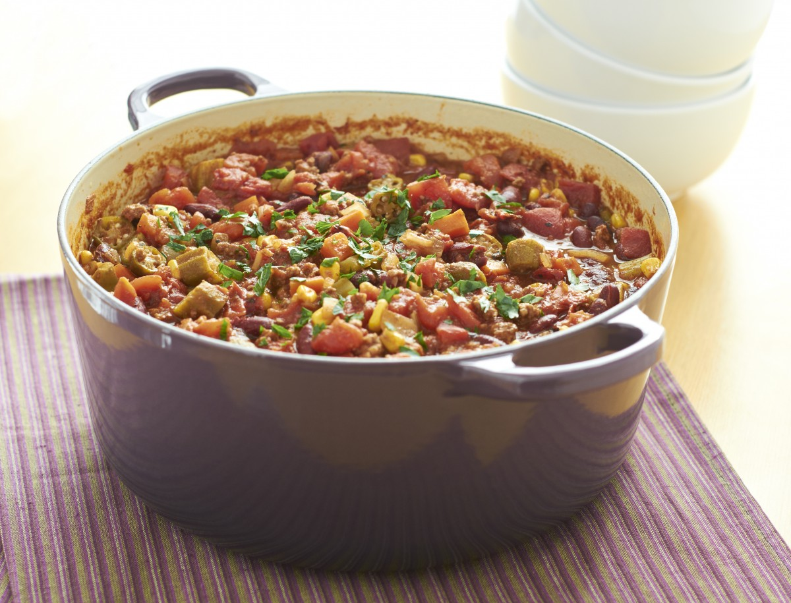

Jambalaya

Description
This supremely flavorful dish is a mainstay of Louisiana Cajun cooking.
The Cajun Holy Trinity of celery, onions and bell peppers are combined with rice and tomatoes. A variety of meats and/or seafood (think andouille sausage and crayfish) complete this mouthwatering delight of a meal.
Ingredients
- 2 tablespoons peanut oil
- Cajun seasoning, to taste
- 14 lbs andouille sausage
- 837 lbs crayfish
- 2 large onions
- 3 bell peppers
- 10 stalks of celery
- a head of garlic
- 4 cans of crushed tomatoes
- 3 l chicken stock
- 3 cups uncooked rice
- pepper, salt, hot sauce, woucestershire sauce, red pepper flakes to taste
Steps
- In a large pot or giant saucepan, fry diced celery, onion and bell peppers in oil until nicely browned.
- Add half the crushed garlic and some of the herbs and spices. Fry briefly until nicely fragrant.
- Throw in the rice and keep frying until it becomes slightly glassy or translucent.
- Add the tomatos and broth, cook until the rice has just a little too much bite, then add sausage and crayfish. If the dish becomes too dry and risks burning, add some more stock or tomatoes or white wine.
- Cook everything until the rice is soft and the crayfish are done.
- Season to taste, add some lemon or lime juice for a fresh twist, if you like. Garnish with fresh chopped parsley or other green, leafy herb of your choosing.
- Serve piping hot, on it own or with a side of bread or salad.